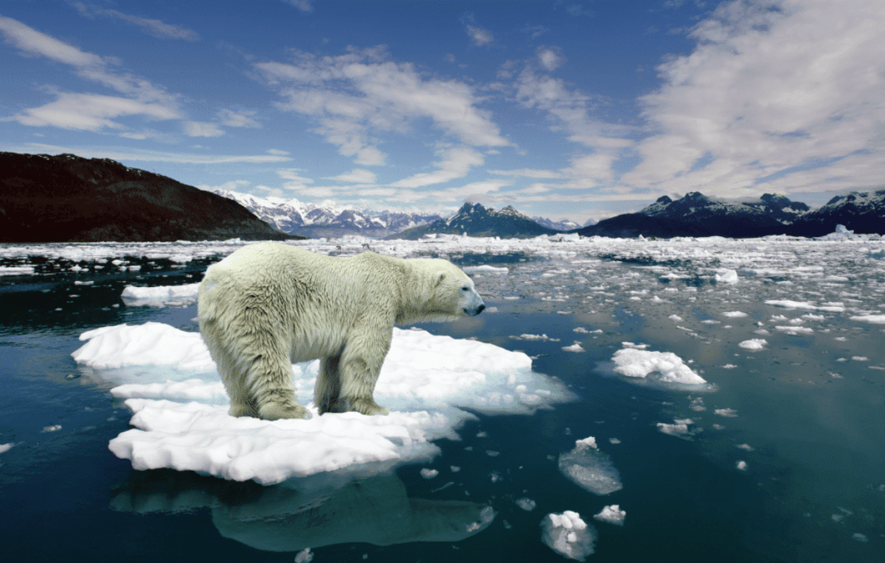
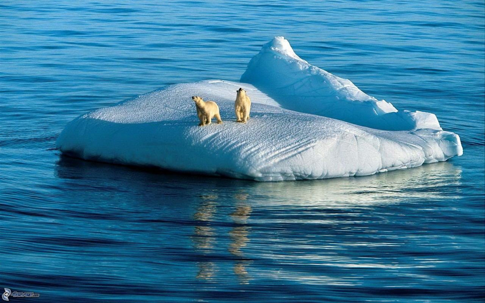

¿QUE ES EL CAMBIO CLIMATICO Y COMO NOS AFECTA?
Entre las variaciones climáticas más destacables que se han producido a lo largo de la historia de la Tierra, figura el ciclo de unos 100.000 años, de períodos glaciares, seguido de períodos interglaciares.
Se llama cambio climático a la variación global del clima de la Tierra. Es debido a causas naturales y también a la acción del hombre y se producen a muy diversas escalas de tiempo y sobre todos los parámetros climáticos: temperatura, precipitaciones, nubosidad, etc. El término "efecto de invernadero" se refiere es la retención del calor del Sol en la atmósfera de la Tierra por parte de una capa de gases en la atmósfera. Sin ellos la vida tal como la conocemos no sería posible, ya que el planeta sería demasiado frío. Entre estos gases se encuentran el dióxido de carbono, el óxido nitroso y el metano, que son liberados por la industria, la agricultura y la combustión de combustibles fósiles. El mundo industrializado ha conseguido que la concentración de estos gases haya aumentado un 30% desde el siglo pasado, cuando, sin la actuación humana, la naturaleza se encargaba de equilibrar las emisiones.

En la actualidad existe un consenso científico, casi generalizado, en torno a la idea de que nuestro modo de producción y consumo energético está generando una alteración climática global, que provocará, a su vez, serios impactos tanto sobre la tierra como sobre los sistemas socio económicos.
Ya en el año 2001 el Tercer Informe de Evaluación del Grupo Intergubernamental de Expertos sobre Cambio Climático (IPCC) ponía de manifiesto la evidencia proporcionada por las observaciones de los sistemas físicos y biológicos que mostraba que los cambios regionales en el clima, en concreto los aumentos de las temperaturas, estaban afectando a los diferentes sistemas y en distintas partes del globo terráqueo. Señalaba, en definitiva, que se están acumulando numerosas evidencias de la existencia del cambio climático y de los impactos que de él se derivan. En promedio, la temperatura ha aumentado aproximadamente 0,6°C en el siglo XX. El nivel del mar ha crecido de 10 a 12 centímetros y los investigadores consideran que esto se debe a la expansión de océanos, cada vez más calientes.
El cambio climático nos afecta a todos. El impacto potencial es enorme, con predicciones de falta de agua potable, grandes cambios en las condiciones para la producción de alimentos y un aumento en los índices de mortalidad debido a inundaciones, tormentas, sequías y olas de calor. En definitiva, el cambio climático no es un fenómeno sólo ambiental sino de profundas consecuencias económicas y sociales. Los países más pobres, que están peor preparados para enfrentar cambios rápidos, serán los que sufrirán las peores consecuencias.
Se predice la extinción de animales y plantas, ya que los hábitats cambiarán tan rápido que muchas especies no se podrán adaptar a tiempo. La Organización Mundial de la Salud ha advertido que la salud de millones de personas podría verse amenazada por el aumento de la malaria, la desnutrición y las enfermedades transmitidas por el agua. España, por su situación geográfica y características socio económicas, es muy vulnerable al cambio climático.
En consecuencia, aunque existen incertidumbres que no permiten cuantificar con la suficiente precisión los cambios del clima previstos, la información validada hasta ahora es suficiente para tomar medidas de forma inmediata, de acuerdo al denominado "principio de precaución" al que hace referencia el Artículo 3 de la Convención Marco sobre Cambio Climático. La inercia, los retrasos y la irreversibilidad del sistema climático son factores muy importantes a tener en cuenta y, cuanto más se tarde en tomar esas medidas, los efectos del incremento de las concentraciones de los gases de efecto invernadero serán menos reversibles.

El cambio climático no es un fenómeno sólo ambiental sino de profundas consecuencias económicas y sociales. Los países más pobres, que están peor preparados para enfrentar cambios rápidos, serán los que sufrirán las peores consecuencias. El Informe de Síntesis de 2014 sostiene con claridad que "muchos riesgos son particularmente problemáticos para los países menos adelantados y las comunidades vulnerables, dada su limitada capacidad para afrontarlos. Las personas marginadas en los ámbitos social, económico, cultural, político, institucional u otro son especialmente vulnerables al cambio climático”.